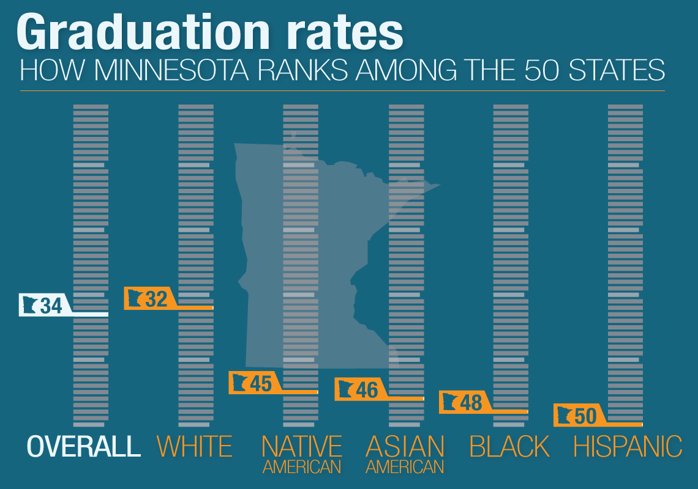

William W. Lager
⋘ | About me | Projects | Maps | Illustrations | Awards | Animations | Bylines | Charts/Infographics | Data/Vis | Presentations
A selection of charts and infographics
Minnesota's graduation gap: By the numbers - MPR News

Minnesota's graduation gap - MPR News